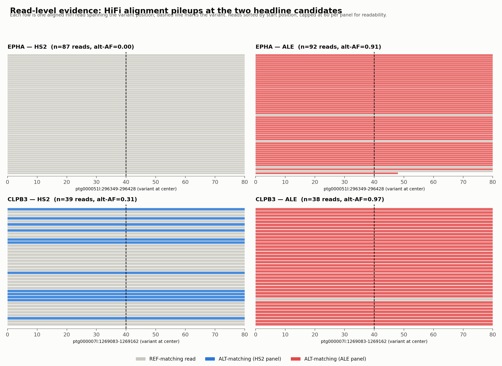
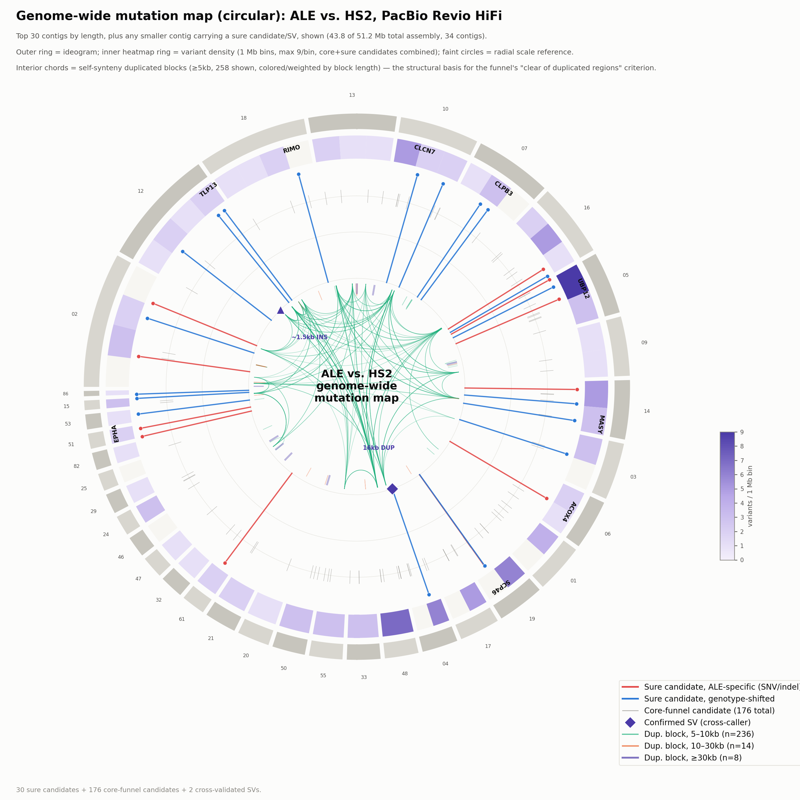
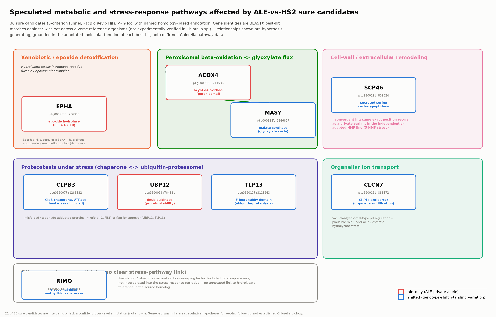
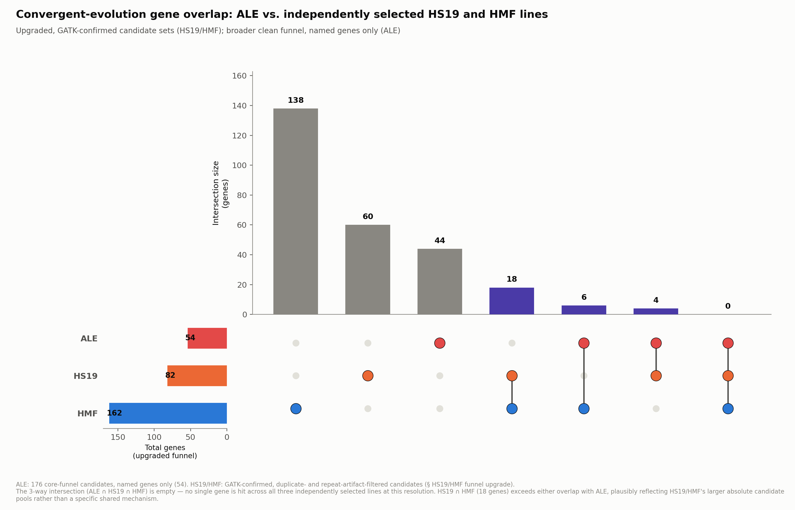
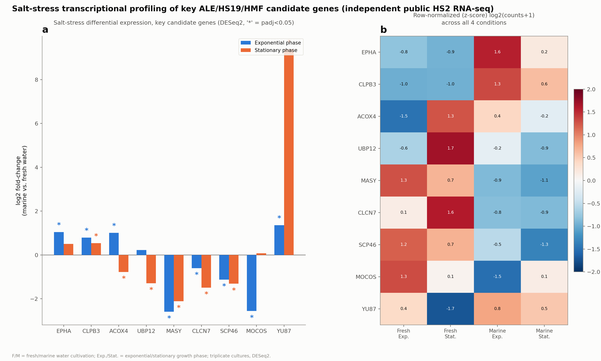

We sequenced an ancestor strain of the microalga Chlorella sp. HS2 and ALE, its descendant after eighteen months of continuous selection under lignocellulosic hydrolysate — an industrial byproduct stream toxic to most microbes — and tracked which mutations rose, which held steady, and which turned out to be noise.
Chlorella sp. HS2 is a green, freshwater-tolerant microalga. ALE is its own descendant, produced by prolonged culturing under hydrolysate — the dark, phenolic-and-furan-rich liquid left over after breaking down lignocellulosic biomass, and normally hostile to microbial growth. We assembled both genomes independently from PacBio HiFi long reads and compared them directly, rather than mapping short reads onto a single reference and inferring the rest.
The unselected progenitor strain. Sequenced and assembled de novo from HiFi long reads, purged of false duplications, and used as the coordinate system the whole comparison is built on.
The same lineage after adaptive laboratory evolution under hydrolysate stress. Its genome carries a small, specific set of changes relative to HS2 — most of the analysis here is about separating the real ones from artifacts.
Genome assembly tells you what's different between two endpoints. It doesn't tell you when a change happened, or whether it was still moving. For that we went back to independent short-read resequencing at three real collection dates spanning the ALE evolutionary timeline, and tracked allele fraction at all 30 high-confidence candidate sites across every sample.
HS2 and ALE both resequenced. Nearly every ALE-private candidate that will eventually fix is still at or near zero — the population hasn't caught up to the genome yet.
HS2-only checkpoint. Confirms the ancestor background stays put — no drift, no contamination — while ALE continues under selection between the flanking timepoints.
Both strains resequenced again. This is where the two strongest, cleanest trajectories in the dataset land:
EPHA and CLPB3 are the two most temporally-resolved candidates in the dataset, and they illustrate two genuinely different routes to fixation — a distinction that only the timepoint data can make visible.
Epoxide hydrolase — xenobiotic/epoxide detoxification. Absent from HS2 at all three collection dates. A new mutation arose within the ALE lineage and was driven to near-fixation entirely within the sampled window.
ClpB chaperone/ATPase — proteostasis under stress. Already segregating at 33–36% in HS2 at every date, meaning it predates the ALE/HS2 split. Selection pushed the same variant from 4% to 83% in ALE — old variation, newly favored.


Nine named, high-confidence candidates cluster into four loosely related functional themes. These are presented as hypothesis-generating leads, not established Chlorella biology — every functional label comes from a best-hit match in a different organism, from Mycobacterium to Arabidopsis to human.

Of 4,146 raw differences between the two genomes, 87% turned out to be repeat- or assembly-driven artifacts, not real mutations. Getting from "different in the alignment" to "confidently different in the biology" was most of the actual work.
A reciprocal check against a 2023 short-read vendor report found no gene-level overlap with its findings — and two of that report's three indel calls carry the exact repeat-artifact signatures this project's filter was built to catch, independent evidence the filtering approach is calibrated correctly rather than overzealous. A previously reported ~2 Mb inversion near an ABC-transporter locus also did not replicate under the corrected, cross-validated pipeline; we say so directly rather than quietly dropping it.
Two independently-derived mutant lines from the same HS2 background — HS19 (sodium hypochlorite selection) and HMF (selection against 5-hydroxymethylfurfural alone) — give a chance to ask whether unrelated selective pressures converge on the same biology. An initial single-caller comparison found three exact-position matches; none survived re-calling with the same rigor applied everywhere else in this project, and were retracted as convergence evidence rather than kept for a good headline.
Molybdenum cofactor sulfurase (exact-position ALE–HMF match) activates aldehyde oxidase — the same enzyme class as GLOX, one of ALE's own candidates. Two independent lineages hitting two nodes of the same aldehyde-detoxification pathway.
ALE ∩ HMFA voltage-dependent chloride channel (ALE–HS19 match) echoes CLCN7, a Cl⁻/H⁺ antiporter already among ALE's own named candidates — a second, independent ion-transport hit under an entirely different stressor.
ALE ∩ HS19 · GO:0005247 enriched, FDR q=0.045
Genome comparison alone can't show a gene is stress-relevant — only that it changed. We cross-checked all 19 named candidates (ALE plus the two convergence lines) against a public RNA-seq dataset of HS2 grown under fresh vs. marine (salt-stress) conditions, at exponential and stationary phase.

This page is a guided summary. The complete technical report covers assembly QC, the full 5-criterion candidate funnel, every one of the 30 sure candidates with per-sample read depth, and point-by-point responses to expert review.